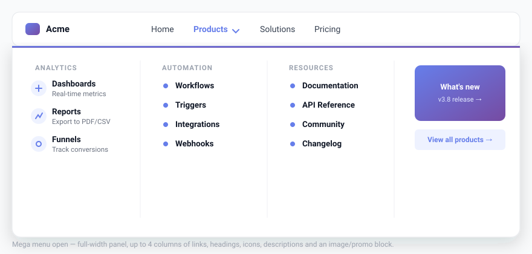

Mega Menu
Turn any top-level menu item into a full-width panel with up to 4 columns — mix links, headings, images, shortcodes, and more without writing any code.

What is a mega menu?
A standard WordPress dropdown shows a single vertical list of sub-items. A mega menu opens a wide panel that can contain multiple columns, section headings, icons, and images. It is common on large e-commerce sites and content-heavy portals.
Enabling the mega menu on a top-level item
- Go to Menu Builder → ⚡ Mega Menu in the admin sidebar.
- The item list shows ON/OFF status badges for each first-level nav item.
- Click ＋ Enable Mega Menu on the item you want to convert.
- Click ⚡ Edit Columns ▶ to open the column editor modal.
- Add columns, populate them with content blocks, then close the modal and save.
Mega menus can only be applied to top-level items. Sub-items are arranged inside columns, not as nested dropdowns. A maximum of 4 columns is supported per item.
Adding and arranging columns
Inside the column editor modal you can:
- Add a column — click + Add Column. Columns are laid out horizontally inside the panel.
- Duplicate a column — click the duplicate icon on any column header to clone it (including all its items) and insert it right after the original. Disabled at the 4-column maximum.
- Reorder columns — drag the column handle left or right.
- Set column width — enter a percentage. Leave blank for equal distribution across all columns.
- Set alignment — choose Left, Center, or Right for all items in the column.
- Delete a column — click the trash icon on the column header.
Column content types
Each column holds one or more content blocks. Click + Add item inside a column to choose a type:
| Type | Description | Key fields |
|---|---|---|
| Link | A clickable link with an optional icon and description line. | Label, URL, Icon class, Description, Open in new tab |
| Heading | A non-clickable section label for grouping links visually. | Label, Icon class |
| Divider | A thin horizontal rule to separate groups of items. | — |
| Image | A full-width image block, optionally wrapped in a link. Pick from the WP Media Library or paste an external URL. | Image, Link URL, Width, Height, Open in new tab |
| Shortcode | Renders any shortcode inside the column — useful for contact forms, newsletters, product grids, or custom widgets. | Shortcode string |
Per-item appearance
Each mega menu panel has its own independent 🎨 Appearance tab inside the editor modal. Changes apply only to that item’s panel and override the global defaults. Click ↺ Reset to global defaults to clear all overrides for that item.
| Control | Description |
|---|---|
| Background | Solid color, one of 12 gradient presets, or a custom gradient built with the visual gradient picker (direction compass + two color pickers). |
| Panel max width (px) | Constrains this panel’s width (400–2400 px) and centers it. Leave empty for full-width behavior. |
| Padding top/bottom & left/right | Inner spacing of the panel. |
| Column gap | Space between columns. |
| Border radius | Rounding applied to the two bottom corners of the panel. |
| Font size | Base font size for all content inside the panel. |
| Link / Heading / Accent / Hover / Description / Divider color | Full per-panel color control independent of the main Colors section. |
| Divider style | Solid, dashed, or dotted. |
| Open/close animation speed | Duration of the panel transition (0–800 ms). Set to 0 for instant. |
Presets
The ✨ Presets tab inside the Appearance panel lets you load a complete column layout in one click. There are 20 industry templates ready to go:
SaaS, E-Commerce, Agency, Restaurant, Travel, Healthcare, Real Estate, Law Firm, Finance, Fashion, Hotel, Nonprofit, Events, Automotive, Gaming, Fitness, Beauty & Wellness, Tech Startup, Portfolio, and Education.
Presets populate both the column content and a matching color palette — so they look polished out of the box regardless of your main menu theme.
Mobile behavior
On mobile, tapping a mega menu item slides in a dedicated full-screen panel with a ← back button at the top — giving the experience a native app feel. Per-item background colors and fonts are neutralised on mobile so the links always render with the same clean style as the rest of the mobile menu.
You can set the mobile behavior per item in the Mega Menu panel:
- Visible on mobile — uses the push-navigation panel described above.
- Hidden on mobile — the mega panel is not rendered on small screens.
Global settings
These settings are found at the top of the ⚡ Mega Menu panel and apply site-wide:
| Setting | Description |
|---|---|
| Full width | Per-item checkbox that makes this panel span the full viewport width. |
| Default link / heading / accent colors | Site-wide color defaults for mega panel content. Per-item Appearance overrides take precedence. |
The “forgiving hover” behavior is built in — the mega panel waits for the mouse instead of vanishing mid-journey when the user moves diagonally toward the panel content.